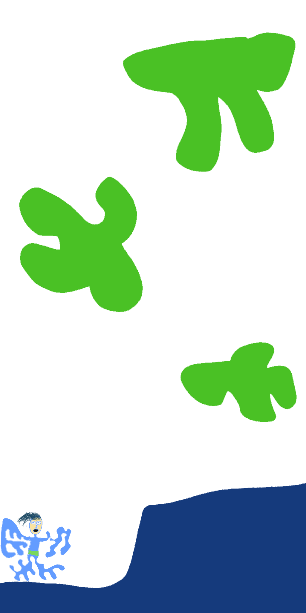

High Concept
It takes the capture mechanic in Mario Odyssey and evolves it into possessing multiple enemies throughout the game and leveling them up for them.
Genre
The gameplay genre is a platformer rpg.
Platform
Desktop only.
Story
Poz is looking for recognition in his small village and not receiving the kind he wants. He is known as a troublemaker who is good for nothing. One day he feels a calling to a mysterious portal, which he opens it believing that it holds the recognition he yearns for. The consequences are immediate as a ghost takes his body and other villagers in the process. With his new ghost form and powers, he must reclaim his body and the recognition that he wanted in the first place.
Gameplay
As Poz, you are able to take control of your enemies and use their different abilities and skills to your advantage. You will start with being able to possess one enemy and at the end you will be able to possess 4 at a time. Everytime you possess a new type of enemy, a pop up menu will come up and show you how to play that enemy. To beat the game, the player must decide which kind of possessed enemies work best together and against the enemies they are fighting at this point of the game. The player also must level up their enemies to gain new skills and abilities.
Screenshots
About the developer
Jackson Robbins is a sophomore at RIT, majoring in the Game Design and Development program. He achieves to get a job as a background coder for a game studio some day.